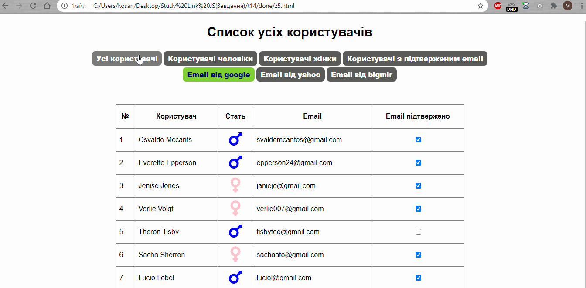
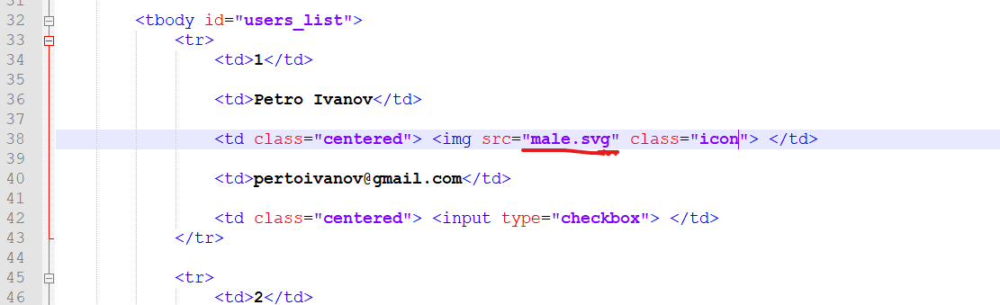
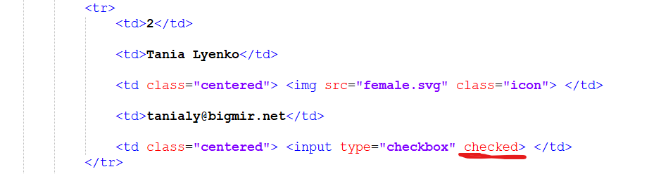
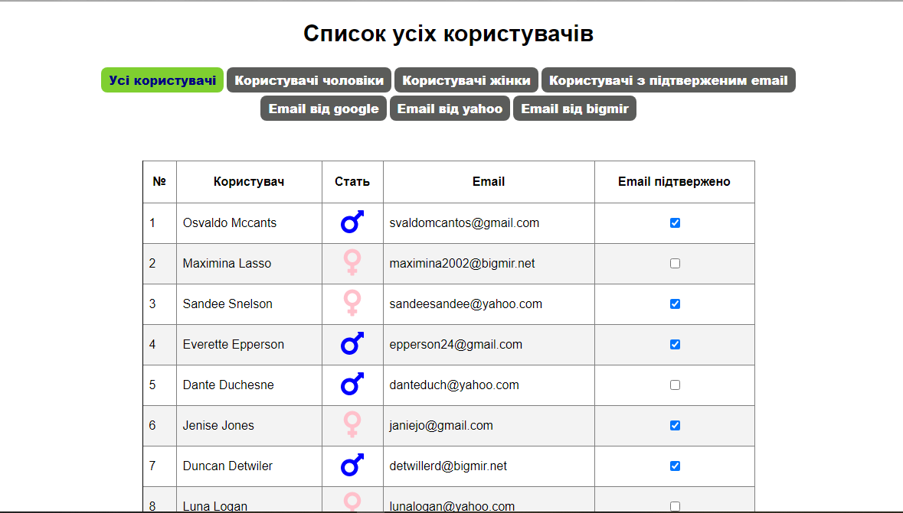
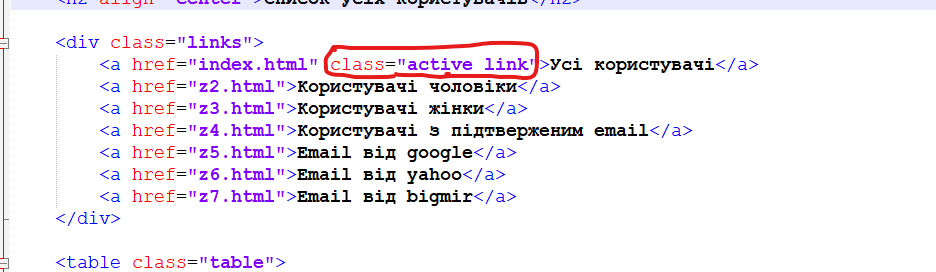
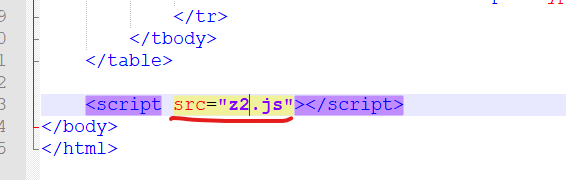

Тема 14.
1. Створіть сайт який відображає список корисутвачів в залежності від вибраного фільтру. Виконуйте завдання по пунктам.

2. Збережіть файли із розміткою та стилями html та css і використайте їх для виконання завдання. Також збережіть іконки необхідні для виконання завдання.


3. Розглянтье верстку із вчителем та розберіть які теги та стилі впливають на відображення кожного користувача.


5. Відобразіть усіх користувачів у index файлі. Використайте список коритувачів

4. Створіть html сторінки аналогчні index.html, попередньо змінивши клас для посилання яке повинно бути активним на відповідній сторінці. А також підключітайте окремі javascript файли для окремих сторінок.

